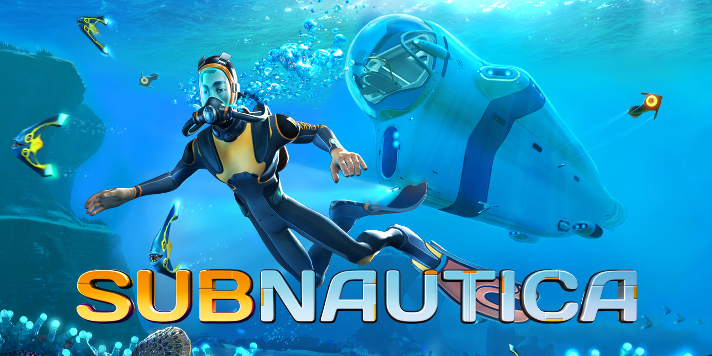
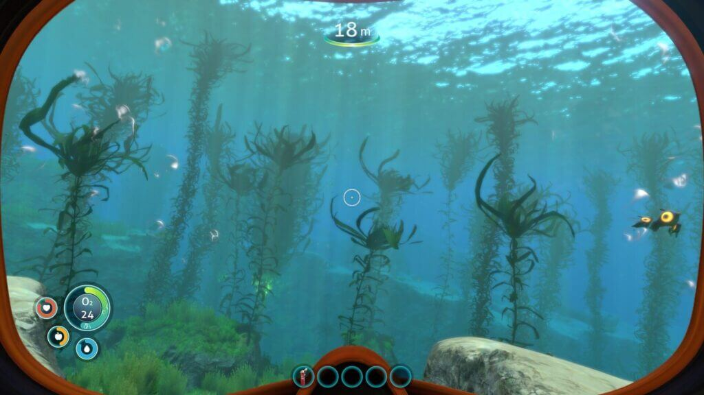

Topicos do site
O que é subnautica
Subnautica é um jogo de aventura e exploração para PC e Xbox One e ps4, onde criaturas e tecnologias alienígenas habitam o fundo do mar. No game, o jogador literalmente mergulha nas profundezas do desconhecido, em um mundo repleto de corais, recursos e mistérios. Confira dicas e veja como das os primeiros passos neste jogo de sobrevivência.
O básico para sobreviver
Subnautica é um jogo focado na sobrevivência. Ou seja, subentende-se que o principal objetivo seja a exploração, caça e coleta de recursos. Entretanto, há mais para se descobrir do que atacar, além de mistérios que fazem a parte alienígena de Subnautica ser realmente interessante.

O progresso é medido pelas tecnologias (blueprints) descobertas. Elas estão dispersas no mar, em partes naufragadas, corais ou perto de criaturas desconhecidas – e, às vezes, bem agressivas. Usando equipamentos avançados é possível explorar profundidades maiores,biomas com temperaturas elevadas e águas envenenadas pela radiação.
Funções vitais
Subnautica não é diferente de outros jogos de sobrevivência. Na parte lateral da tela, temos as funções básicas do personagem – vida, oxigênio, fome e sede – que devem ser mantidas a qualquer custo. A vida é recuperada com o First Aid Kit. O item pode ser fabricado ou pego de graça na estação do Medical Kit Fabricator a cada 30 minutos.
Fome e sede são saciados com comida e líquidos de origem animal. Não é necessário um item especial, como uma rede para pescá-los. Basta chegar perto do peixe e clicar para pegá-lo. O oxigênio é o mais importante, pois além de mantê-lo vivo embaixo d’água, também mede a distância que você pode explorar. Ou seja, quanto maior for a quantidade de oxigênio, mais tempo você poderá permanecer dentro do mar.
Biomas (biomes)
Subnautica possui diversos biomas (biomes). Cada região tem sua própria fauna e flora que difere das demais, além de recursos únicos e necessários para a sua jornada. O local onde você inicia o jogo é chamado de Safe Shallows, uma região relativamente segura e com animais passivos, ótima para procurar por comida e matéria-prima.
A navegação por fundo do mar pode ser um tanto confusa, especialmente no começo. Enquanto você não possui veículos, use a localização da Aurora – que se encontra ao leste – para guiar-se no mapa. Mais para frente no jogo, você poderá criar um item chamado Beacon que é usado para marcar pontos específicos no fundo do mar.
Tecnologias (blueprints)
As tecnologias são parte fundamental do progresso e da história de Subnautica. O seu papel, como sobrevivente, é buscar por qualquer recurso que o possibilite viver e, futuramente, escapar do local. No começo, você começará com algumas receitas (blueprints) para a fabricação de itens básicos, como tanque de oxigênio e scanner.
Como dito antes, ao longo da jornada você encontrará tecnologias aprimoradas, incluindo upgrades necessários para explorar biomas complexos e de difícil acesso. A chave para avançar é entender a ordem de montagem dos itens. Um item precisará de outro para ser criado.
Os primeiros passos
Ao ser ejetado da nave Aurora, apague o fogo no Lifepod e interaja com os painéis. Abra o storage container, guarde o extintor e pegue um Flare e uma guarrafa de água (Filtered water). Você pode guardar as barras (Nutrient blocks) para mais tarde. Pegue também um First Aid Kit no Medic Kit Fabricator, um painel ao lado do storage container.
Todos os itens, incluindo as ferramentas, são criados no Fabricator.
Em seguida, saia do Lifepod pela escotilha no chão ou escada para o topo. Antes de começar a exploração, pegue um pouco de comida e água. É prático ter uma reserva de alimentos e líquidos para qualquer eventualidade. Contudo, não faça um estoque grande, pois os alimentos têm prazo de validade – e você precisará de espaço no inventário.
Capture o Pepper e o Bladderfish. O primeiro servirá de comida e o segundo se transformará em água. Você provavelmente encontrará algumas rochas pelo caminho chamadas de Limestone. Quebre-as para coletar Titanium e Copper Ore, material para fabricar o Scanner, tanque de oxigênio e Fins, três itens muito importantes para o começo do jogo.
Materiais
- Filtered water:1x Bladderfish
- Cooked Pepper:1x Pepper
Standard O2 Tank, Scanner e Fins
O primeiro item que deve ser fabricado é o tanque de oxigênio (Standard O2 Tank). Desta maneira, você permanecerá por mais tempo embaixo d'água. Use o Titanium encontrado nas Limestones ou procure por Metal Salvage, pedaços soltos de metal que podem ser refinados em matéria-prima no Fabricator. Eles fornecem três Titanium por vez.
A segunda ferramenta mais importante é o Scanner. Com esse objeto você registrará os blueprints e irá catalogar a vida marina extraterrestres.
A receita do item pede Titanium e uma bateria (Battery). Pegue dois Acid Mushroom – cogumelos de cor lilás encontrados perto do Lifepod – e um Copper Ore para criá-la no Fabricator. Depois use-a junto com o outro material para montar o Scanner. Coloque-o na barra inferior de atalhos.
Por fim, monte as barbatanas (Fins) no Fabricator para aumentar sua velocidade no mar em 15%. Upgrades também são bem-vindos. Assim que você que explorar as cavernas, colete Quatz para transforma-lo em vidro (Glass). Faça um segundo tanque de oxigênio e use o material para fazer o High Capacity O₂ Tank, um tanque com maior capacidade.
Materiais
- Scanner: 1x Battery, 1x Titanium
- Standard O2 Tank: 3x Titanium
- Fins: 2x Silicone Rubber
- High Capacity O2 Tank: 1x Standard O₂ Tank, 2x Glass, 1x Titanium
Survival Knife e Repair Tool
Agora que você já possui o Scanner e pode explorar com mais calma, é uma boa ideia ter uma maneira de se defender e consertar os estrados dentro do seu Lifepod. Apesar de ser uma arma branca, a Survival Knife não é exatamente um item de ataque e, sim, de defesa. Pode ser usada para espantar animais e também para cortar materiais.
A Survival Knife é feita de Titanium e Silicone Rubber, um item derivado de Creepvine Seed Cluster, uma espécie de semente fluorescente que cresce em algas. Você vai encontrá-las na Kelp Forest, um bioma repleto de algas compridas, não muito longe do seu LifePod. O local é de fácil acesso, mas conta com a presença de Stalkers, um peixe agressivo. Se um deles vier a te atacar, use a faca para assustar o bicho e fuja.
O próximo objeto da lista é a Repair Tool. Você vai precisar de Titanium, Silicone Rubber e um material novo, o Cave Sulfur - um pó a base de enxofre encontrado em flores vermelhas, chamadas de Sulfur Plants. Tenha um cuidado extra ao coletar esse material, pois Crashfishs residem dentro das plantas onde há Cave Sulfur. São peixes agressivos, que nadam em sua direção e explodem, causando bastante dano.
Materiais
- Survival Knife: 1x Silicone Rubber, 1 Titanium
- Repair Tool: 1x Silicone Rubber, 1x Cave Sulfur, 1x Titanium
Seaglide, Vehicle Bay e Seamoth
Com tudo consertado e um pequeno estoque de materiais e ferramentas essenciais, é a vez de otimizar o processo de exploração. Enquanto alguns biomas são pacíficos, outros possuem criaturas ameaçadoras e climas pouco favoráveis para a sobrevivência humana. Para chegar a esses locais, você precisará de mais velocidade, iluminação e proteção.
O primeiro passo é obter velocidade, o que te ajudará na busca dos próximos blueprints desse tutorial. Encontre os três fragmentos do Seaglide na Kelp Forest e Safe Shallows. O item é um pequeno veículo de propulsão, com um radar e uma lanterna (botão direto do mouse). Ele é movido a baterias, portanto, fabrique uma reserva e deixe no inventário.
Os materiais do Seaglide derivão de outros mais simples. O Lubrificant é feito de Creepvine Seed Cluster, o Copper Wire de Copper Ore.
Depois vá para uma região chamada Grassy Plateaus, próximo a Kelp Forest. Você saberá que está no lugar certo quando achar uma vegetação avermelhada. Nesse local, use o Scanner para pegar os blueprints do Vehicle Bay e Seamoth, entre a plantas e os destroços da Aurora.
O Vehicle Bay é uma estação flutuante que fabrica veículos e o Seamoth um pequeno submarino. Os dois precisam de Power Cell, um eletrônico criado a partir de duas baterias e um Silicone Rubber. As receitas também pedem Titanium Ingot, uma barra condensada composta por Titanium.
Para conseguir o último material da lista, o Lead, quebre pedras de areia chamadas Sandstone Outcrop. Você vai encontrá-las na Kelp Forest, em Grassy Plateaus e, raramente, em algumas cavernas de Safe Shallows.
- Seaglide: 1x Battery, 1x Lubrificant, 1x Copper Wire, 1x Titanium
- Vehicle Bay: 1x Titanium Ingot, 1x Lubrificant, 1x Power Cell
- Seamoth: 1x Titanium Ingot, 1x Power Cell, 2x Glass, 1x Lubrificant, 1x Lead
Evite lutas desnecessárias
Em Subnautica, você pode obter comida sem caçar. Ou seja, não é necessário matar as criaturas para sobreviver – apenas em caso de defesa. Evite qualquer confronto desnecessário com as criaturas marinhas. É um esforço em vão e que provavelmente não trará lucros. E tenha cuidado, os animais são sensíveis a estímulos, como sons e luzes.
Ao encontrar em uma nova área, certifique-se de que as luzes do Seamoth não vão perturbar a paz, verifique seus escudos, reabastecimento de energia, em especial, a temperatura do lado de fora. Seja o ambiente hostil ou não, tudo em Subnautica é feito para que o jogador pense. E procure uma força de usar a situação ao seu favor.